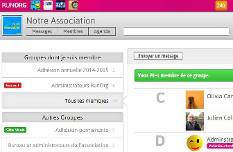

Cette application en ligne est la première conçue par RUNORG. Elle permet aux associations de bénéficier d'un intranet collaboratif efficace pour leur communication avec leurs membres et l'organisation de leurs activités au quotidien.
Elle se compose de toutes les fonctionnalités essentielles pour l'animation numérique des associations.
En ligne, cette application ne nécessite aucune compétence informatique autre que bureautique.